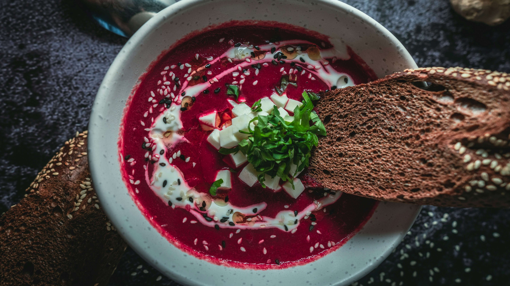
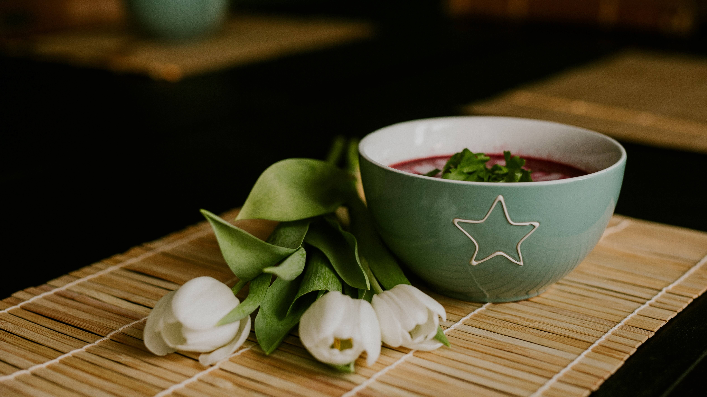

 
Beskrivning av receptet
Kallt ute? Är du sugen på varm soppa? Gör en sagolik rödbetssoppa med pepparrotsyoghurt. Härlig färg-, doft- och smakupplevelser. Serveras med ett gott bröd.
Refrenser:
- Receptet är taget ifrån denna länk.
Ingredienser
- 500 g Rödbetor
- 2 potatisar
- 2 gula lökar
- 2 vitlöksklyftor
- 4 cm färsk ingefära
- 1 msk olivolja
- 1 1/2 l grönsaksbuljong
- Limesaft
- Salt och peppar
- 2 dl matyoghurt
- Pepparrot
- Ev. bröd till servering
Gör så här:
- Skala och tärna rödbetor, potatis, lök, vitlök och ingefära. Fräs allt i olivolja. Tillsätt buljong och koka under lock tills allt är mjukt.
- Mixa soppan slät med mixerstav. Smaksätt med limesaft, salt och peppar.
- Smaksätt matyoghurt med riven pepparrot ev. salt och peppar.
- Servera rödbetssoppan med pepparrotsyoghurten och bröd.